Link Card 是 macOS 菜单栏 App，负责创建 Link 付款请求、读取批准后的虚拟卡信息和取消请求。它不会替你在商家网站下单，也不会自动提交商家付款表单。
本页截图来自真实界面代码的离线演示窗口。账户、授权短语、请求和卡信息均为虚构示例；Costco 为默认商家示例，演示卡信息不能用于付款。
首次安装请先阅读安装指南，下载安装最新版 App。
1. 核心功能：显示与复制 Visa 虚拟卡
批准后直接查看卡号、CVC／CVV、卡面有效期和账单地址，并复制到商家的付款页面。 下图展示 Visa 虚拟卡；实际卡组织及可用字段以 Link 返回结果为准。
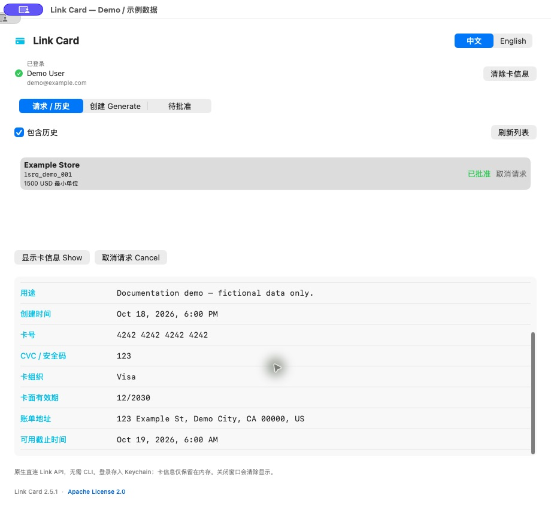
卡信息展示示例：图中全部为虚构数据，不是真实付款凭证。
下方表格显示以下字段，未返回的字段显示为 —：
| 字段 | 含义 |
|---|---|
| Card number | Link 返回的虚拟卡卡号 |
| CVC | 虚拟卡安全码，也称 CVV |
| Expiration | 卡的月份／年份有效期 |
| Billing address | 返回的账单地址 |
| Brand | 卡组织 |
| Valid until | Link 返回的卡凭证实际截止时间；缺失时显示 —，与请求到期时间、卡面有效期分别展示 |
| Request expiry | Link 返回的请求到期时间 |
| Spend request ID | 请求 ID，通常以 lsrq_ 开头 |
| Status | 请求当前状态 |
| Merchant / Merchant URL | 创建请求时填写的商家名称和网址 |
| Context | 购买用途 |
| Created at | 请求创建时间 |
已有批准请求，如何显示？
- 切换到 请求 / 历史。
- 点击 刷新列表。
- 选中要查看的请求。
- 点击 显示卡信息 Show。
卡号、CVC／CVV 和卡面有效期旁各有独立的 复制 按钮，点击后显示「已复制」，可直接粘贴到商家结账页。缺失字段不能复制。也可选中文本后按 ⌘C 复制。App 不会自动复制，也不会自动填写商家页面。完整卡号和 CVC 会直接显示在面板内。
点击 清除卡信息 可清空当前显示。收起面板也会清除卡信息显示，等待批准可继续；不会取消服务端请求。卡响应使用临时网络会话处理，不会写成卡信息 JSON 文件。
第一次使用？继续阅读下面的启动、登录、创建和批准流程。未批准的请求不会显示完整卡信息。
2. 菜单栏下拉面板
安装后打开 LinkCard.app，点击 macOS 顶部菜单栏的信用卡图标，即可直接展开操作面板。v2.7.0 起不再打开独立主窗口。
- 点击图标展开或收起；点击面板外或按 Esc 也可收起。
- 面板内可以查看请求、创建、批准、退出登录和检查更新；内容较多时向下滚动。
- 右键点击图标可打开「检查更新…」「退出」等快捷菜单；面板底部也提供「退出」。
- 收起面板会清除卡信息显示，已有请求保留在 Link。等待批准可以继续；批准后再次展开面板即可读取卡信息。
切换语言
面板顶部提供 中文 / English 切换控件。切换后，按钮、菜单栏菜单、确认框、卡信息字段和已有状态提示会即时更新，重启后也会保留选择。商家名称、用途、请求 ID 和卡信息本身不会被翻译。
面板布局与输入快捷键
面板会根据屏幕可用空间调整尺寸，内容较多时可纵向滚动。下方早期版本截图用于展示字段内容；v2.7.0 起实际界面为菜单栏下拉面板。
| 窄窗口单列 | 滚动至底部 |
|---|---|
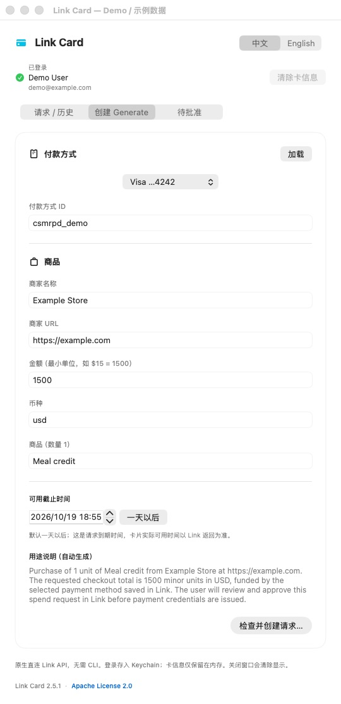 |
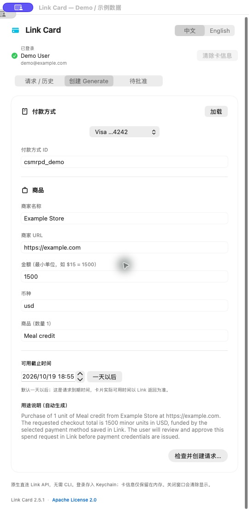 |
所有文本输入框支持 ⌘C 复制、⌘V 粘贴、⌘X 剪切、⌘A 全选、⌘Z 撤销、⇧⌘Z 重做，也可使用 macOS 的「编辑」菜单。先点击输入框，将光标放入其中；⌘A 后粘贴可替换整个字段。付款方式下拉选择后，其 ID 仍可手动粘贴修改。Context 自动生成，无需输入；可选中文本复制。
自动更新（v2.6.0 起）
底部提供「检查更新…」按钮和「自动检查更新」开关，菜单栏也有检查入口。自动检查默认每天一次；关闭后仍可手动检查。发现新版时，按 Sparkle 窗口提示下载、安装并重启；安装前请完成当前操作。更新清单和下载包都会验证签名。第一次从旧版升级到带更新功能的版本，仍需手动下载替换一次。
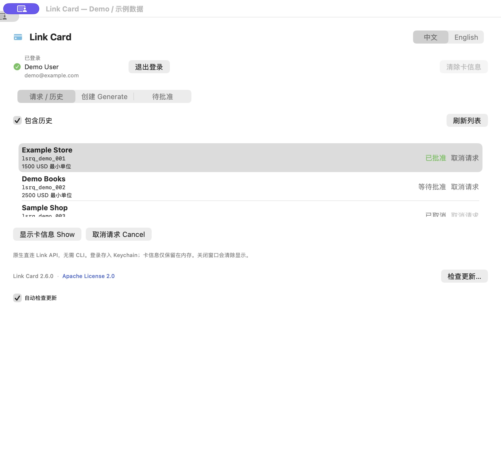
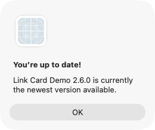
3. 登录 Link
- 点击标题下方的 登录 Link。
- 点击 打开 Link 登录授权 ↗，进入官方 Link 网站。
- 在浏览器登录自己的 Link 账户，根据页面要求输入 App 显示的授权短语并完成授权。
- 返回 App，等待登录完成。右上角的登录按钮会替换为「已登录」和 Link 返回的姓名／邮箱。
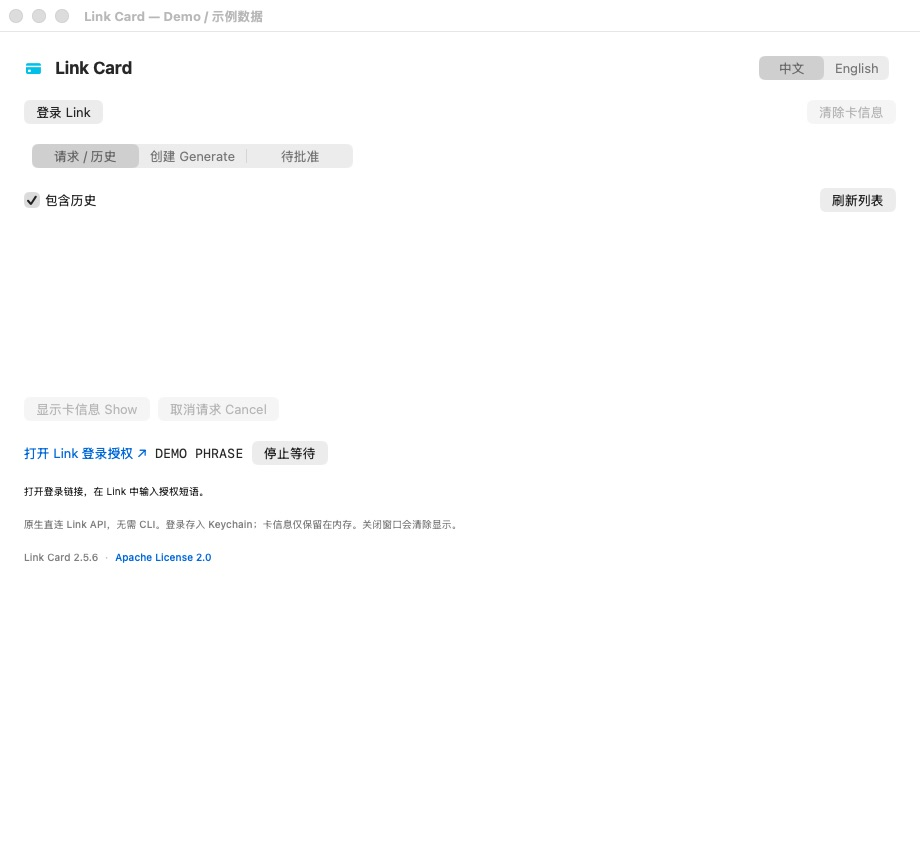
点击授权链接，在官方 Link 页面完成登录；图中短语仅为演示。
重新打开 App 时会自动检查登录并读取账户信息；如果登录失效且无法自动续期，会重新显示登录按钮。临时网络故障不会直接把已有登录标记为退出，账户信息无法加载时会显示提示。
这是授权 App 访问 Link，和稍后批准某一笔购买请求是两个独立步骤。独立 App 登录保存在 macOS Keychain 中，无需安装 link-cli、Node.js 或 npm。
如果本机已有尚未过期的 CLI 登录，App 可以只读复用其 access token，不会修改 CLI 配置或使用 CLI 的 refresh token。提示过期后，点击 App 的「登录 Link」建立独立登录即可。
退出登录
登录后，账户信息旁会显示 退出登录。点击后会清除本 App 的 Keychain 登录凭证、账户信息、卡信息和本地列表，并停止等待批准。退出后显示「登录 Link」，下次启动也不会自动复用 link-cli 的登录；重新登录即可查看服务端已有请求。
此操作只退出本 App，不修改 link-cli 配置、不退出浏览器中的 Link，也不会取消已有付款请求。需要撤销服务端授权时，请在 Link 中管理连接。
4. 创建付款请求
先在商家网站确认要购买的商品和结账总金额，再回到 App：
- 选择 创建 Generate 页签。
- 在付款方式旁点击 加载。
- 从下拉列表选择付款方式；选择后，「付款方式 ID」会自动填入。也可以手动填写已有的付款方式 ID。
- 填写下列信息。
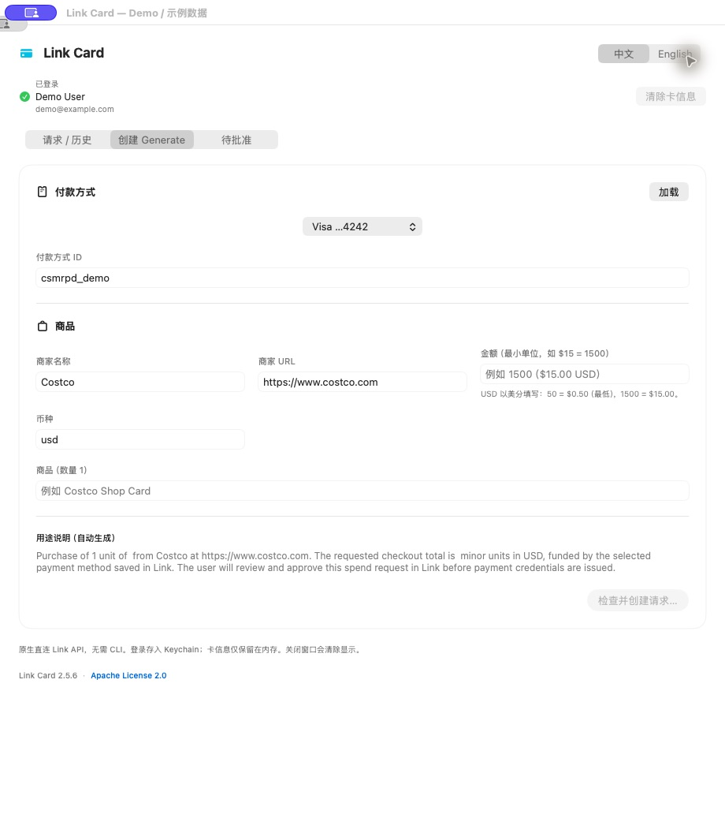
商家默认填入 Costco 和 https://www.costco.com，可以修改。金额和商品框中的浅色文字只是示例，不会自动提交，必须填入实际购买内容。USD 金额按美分填写，最低 50（$0.50）；1500 = $15.00，50000 = $500.00。用途说明会随字段自动更新，无需手填。
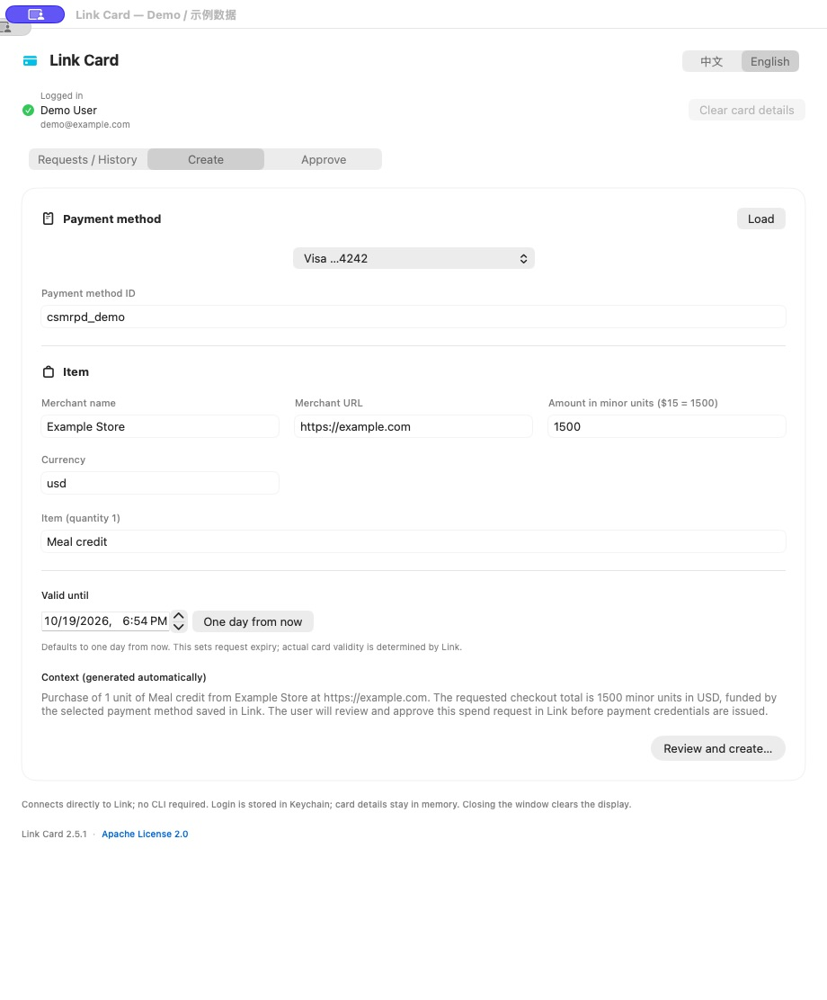
英文界面示例：金额 1500 配合 usd 表示 $15.00。
| 字段 | 怎么填 | 示例 |
|---|---|---|
| 付款方式 ID | Link 中用于支付的付款方式，不是 spend request ID | 从下拉列表选择 |
| 商家名称 | 实际收款商家，默认 Costco，可修改 | Costco |
| 商家 URL | 完整的 HTTP/HTTPS 地址，默认 Costco 网址，可修改 | https://www.costco.com |
| 金额 | 币种的最小单位，填写正整数 | USD $15.00 填 1500 |
| 币种 | 三字母币种代码 | usd |
| 商品 | 本次购买内容；当前表单固定数量为 1，商品名不要包含逗号 | Meal credit |
| 用途 Context | 根据商家、URL、商品、金额和币种自动生成，无需填写 | 创建前可在确认框核对 |
- 点击 检查并创建请求…。
- 在确认框中核对商家、URL、金额、商品和用途。
- 点击 创建并请求批准。仅填写表单不会提交请求。
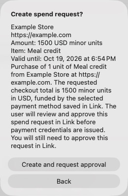
确认框供你检查内容；点击 Back 可以返回修改。
金额必须结合币种理解。例如 usd 下 10000 表示 $100.00，而不是 $10,000。请求金额和状态也不等于商家最终结算金额。
此客户端不支持自定义请求到期时间，创建时不提交 expires_at。卡面有效期和实际可用截止时间以 Link 返回结果为准。
5. 批准请求并自动显示卡信息
- 创建成功后自动进入 待批准 页，点击 在 Link 中批准请求 ↗。也可以在此页选择之前的待批准请求，核对商家、金额及自动生成的用途；若尚无链接，点击 获取批准链接。
- 在 Link 官方页面核对并亲自批准本次请求。
- 等待 Link 批准。App 每两秒检查一次状态，最多等待十分钟；发现已批准且面板展开时自动读取卡信息；面板收起时，再次展开后读取。
- 如果没有自动更新，点击 已批准，刷新卡信息，或在列表中选中请求后点击 显示卡信息 Show。
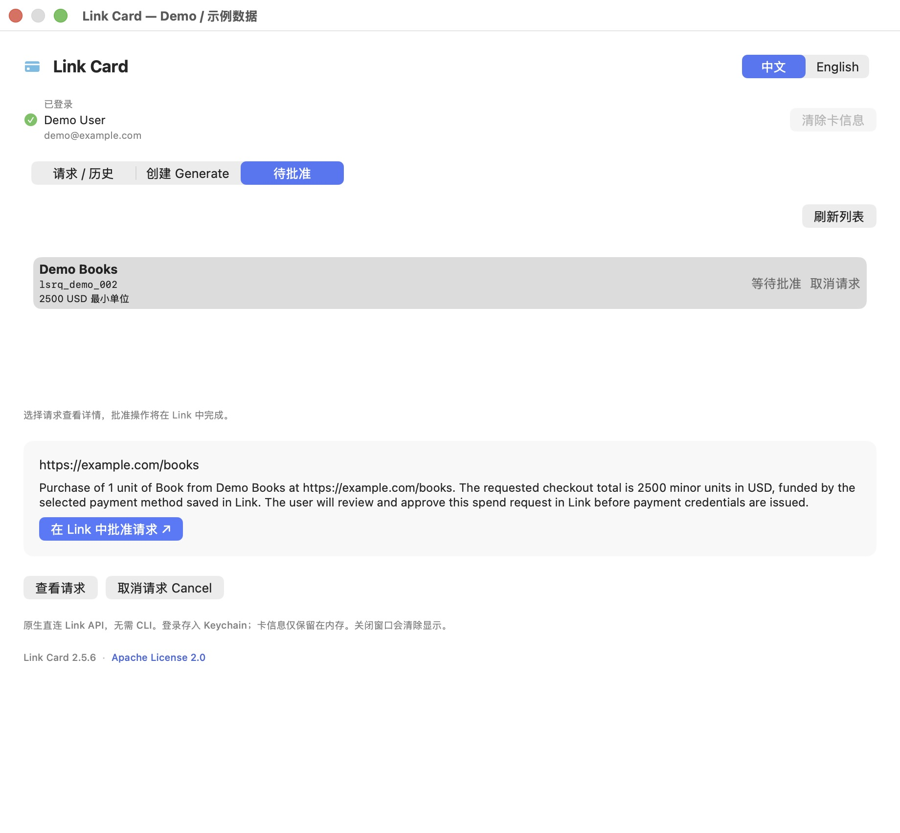
查看之前的请求： 打开「待批准」，点击「刷新列表」，选中请求查看商家 URL、请求金额和用途。没有链接时点击「获取批准链接」；点击「查看请求」可重新读取状态并开始等待批准。已批准的请求会在刷新后离开待批准列表，可到「请求 / 历史」查看卡信息。没有待批准请求时页面会显示空状态提示。
App 不会替你批准购买请求。等待超过十分钟只表示 App 停止自动检查，不代表请求已取消。
6. 取消请求
- 在 请求 / 历史 中选中请求。
- 直接点击该行的 取消请求，或使用列表下方的 取消请求 Cancel。只有已创建、等待批准或已批准状态可以取消。
- 核对确认框中的商家和请求 ID，再点击 取消请求。
- Link 确认取消后，App 会清除该请求的卡信息并停止等待批准。请求会从活跃列表移除，打开「包含历史」即可查看；也可以刷新以重新读取服务端状态。
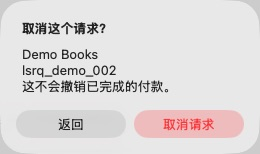
核对商家和请求 ID，再决定返回或取消；截图没有执行取消操作。
服务端可能拒绝取消某些状态的请求，App 会显示错误。
7. 查看历史
打开 包含历史，列表会重新读取历史请求，包括取消、过期等非活跃请求。选中记录后可以尝试显示详情，但过期或已结束的请求不保证还能返回完整卡信息。
这里是 spend request 历史：列表金额是请求中记录的金额，不是专门查询的商家实际扣款金额。当前 App 没有独立的商家交易流水、退款追踪或对账页面。核对实际扣款时，请结合商家收据和原付款方式最终入账记录。
常见问题
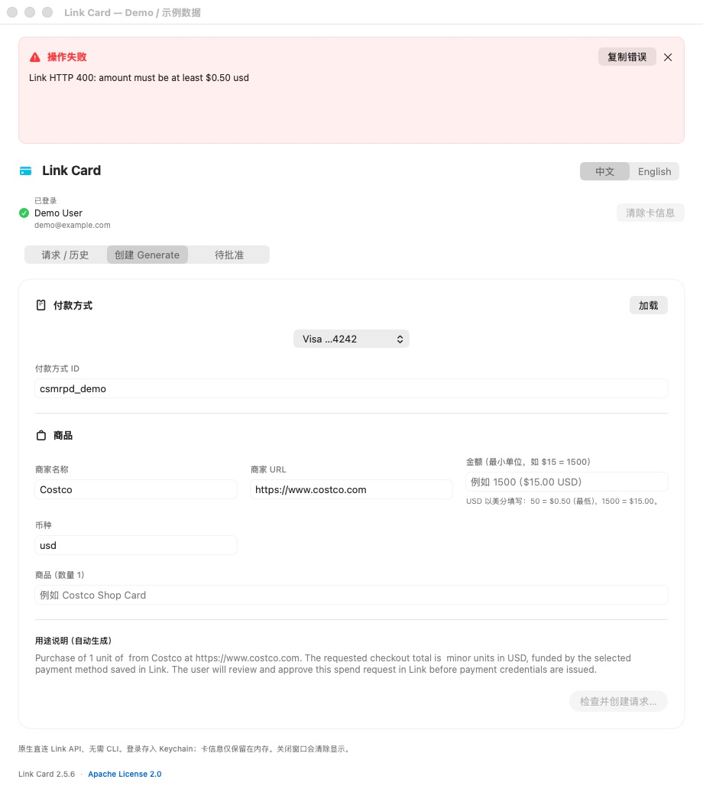
发生错误时，面板顶部会显示红色错误栏，保留 Link 返回的具体错误。切换页面、刷新和滚动不会清除它；点击「复制错误」可分享错误文字，点击 × 可关闭。创建失败会保留填写内容，不会跳转到待批准页。
遇到 amount must be at least $0.50 usd 时，将 USD 金额填写为至少 50。创建失败不会产生可批准的请求。若旧版本提示 expires_at is not supported for this client，退出并更新到 v2.5.6 或更新版本；当前创建表单已移除自定义截止时间。
| 情况 | 处理方式 |
|---|---|
| 没有活跃请求 | 打开「包含历史」，或创建新请求 |
| 付款方式列表为空 | 确认登录账户正确，点击「加载」；根据 Link 返回的提示处理账户或付款方式问题 |
| 创建按钮不可点击 | 检查必填字段，以及是否仍有操作在进行 |
| 提示金额或 URL 无效 | 金额填写正整数最小单位；URL 必须带 http:// 或 https:// |
pending_approval，没有卡号 |
打开本次请求的批准链接，完成批准后刷新 |
| 登录过期、HTTP 401 | 点击「登录 Link」重新授权，再刷新 |
卡号、地址或 CVC 显示 — |
该次响应没有提供此字段；确认状态和批准情况，不能从 — 推断真实卡信息 |
| 收起面板后看不到卡信息 | 从菜单栏重新打开，选择请求并点击「显示卡信息 Show」 |
| 请求创建后出现错误 | 先刷新列表及历史，确认是否已创建，避免直接重复提交同一笔请求 |
当前范围
- Apple Silicon、macOS 13 或更新版本。
- 支持中文和 English 即时切换，并保存语言偏好。
- 每个创建请求包含一项商品，数量固定为 1。
- 不自动下单、不自动批准、不自动启动、不提供退款操作。
- 当前构建采用本地 ad-hoc 签名，没有 Apple 公证。
若出现 refresh_token is not active: status: revoked，表示保存的登录刷新凭证已失效。v2.5.7 起会恢复「登录 Link」按钮；点击并在 Link 中重新授权即可。无需分享任何 token。